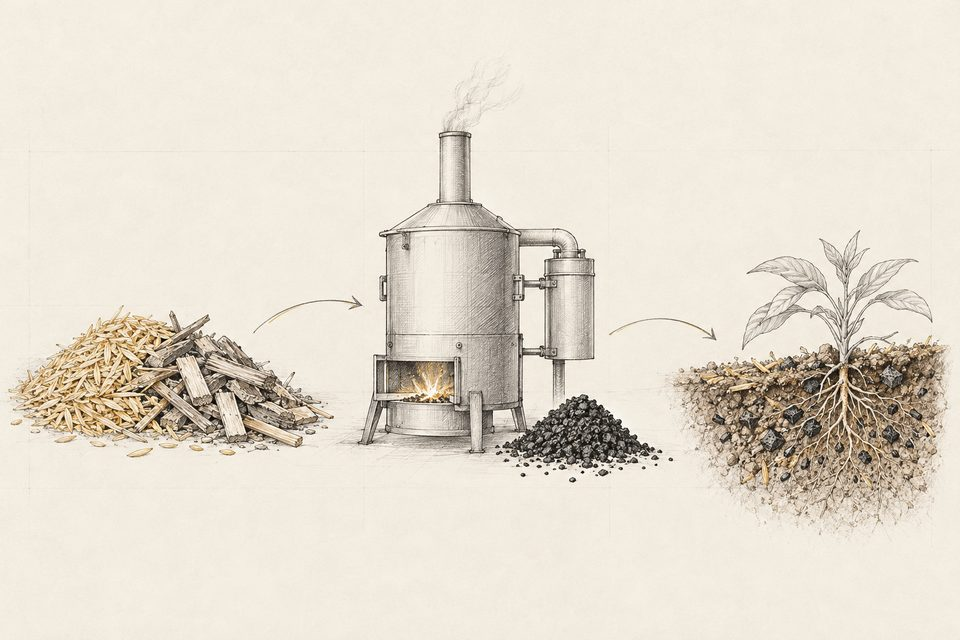

原料を調べる
量、水分、成分、出る時期。集められる範囲と費用を見積もります。
バイオ炭は、木や草、農業の残渣といったバイオマスを、酸素の少ない状態で加熱して作る炭です。そのまま腐らせたり燃やしたりすれば二酸化炭素に戻る炭素の一部が、分解されにくい形で残ります。
農地にまくと、その炭素は土の中に長くとどまります。国のJ-クレジット制度には「バイオ炭の農地施用」の方法論があり、とどめた炭素の量をクレジットとして認証・取引できます。主な条件は、国内の未利用バイオマスを原料にすること、350℃を超える温度で炭化すること、鉱質土壌の農地などにまくことです。
ただし、作れば事業になるわけではありません。原料をどう集め、できた炭をどこで使い、費用をどう回収するか。当社は、この組み立てを技術と事業の両面から行っています。

残渣を乾かし、酸素の少ない状態で加熱して炭にします。原料の水分と大きさで、設備の選び方が変わります。
農地にまいて、土づくりに使います。使う相手によって、炭に求められる性状が変わります。
土に入れた炭素は長くとどまります。その量を測り、記録して、クレジットにします。
左が原料、右が使い道です。原料の性状と、近くにいる使い手の条件から、成り立つ組み合わせを探します。
バイオ炭は、作れば売れるものではありません。先に、うまくいかない理由を書いておきます。
残渣はかさばり、水分を含み、出る季節が決まっています。集める距離と乾かす手間で、採算が大きく変わります。
原料を炭にすると、重さも量も大きく減ります。同じ量の原料から取れる炭は少なく、炭1トンあたりの費用は高くなります。炭の販売だけ、クレジットだけで設備費を回収するのは簡単ではないため、熱の利用まで含めて組み立てます。
土に入れる炭には、成分、粒の大きさ、酸性かアルカリ性かが問われます。原料と炭化の条件で性状が変わるため、先に使う相手を決めます。
記録の取り方が決まっており、認証までに時間がかかります。価格も動きます。クレジットを収入の柱にしすぎない計画にします。
守秘義務のため、お客様名・場所・数値は掲載していません。進行中のものは、いまの段階をそのまま記載しています。
バイオ炭の製造とカーボンクレジット組成の事業開発支援
事業開発中サトウキビ産地におけるバイオエタノール・バガス発電の事業化調査
FS 段階家畜ふんの炭化と、バイオガスを組み合わせた設備の開発
構想段階量、水分、成分、出る時期。集められる範囲と費用を見積もります。
炭化の方式と規模を決め、メーカーの提案を同じ物差しで比べます。
物質と熱の収支を出し、設備費・運転費・収入から事業性を評価します。
炭を使う農地、クレジットの買い手。使う側の条件を確かめ、計画に織り込みます。
当社は炭化設備のメーカーではなく、売る機器を持っていません。バイオ炭そのものの販売も行っていません。
事業化には、資金・原料・使い先がそろう必要があります。どの立場の方からのご連絡も歓迎します。
出資、融資、共同事業。事業計画と技術の内容を、秘密保持契約のもとでご説明します。
製糖、精米、畜産。処理に困っている残渣の量と状態をお聞かせください。
農地で炭を使いたい方、クレジットの購入を検討されている企業の方。
地域で出る残渣の活用を検討されている自治体、農業団体の方。
現在、バイオ炭の販売は行っていません。当社が行っているのは、バイオ炭を製造・利用する事業の組み立てです。
販売していません。当社は機器メーカーではなく、売る機器を持っていません。原料と使い道に合った炭化の方式と規模を決め、メーカーの提案を同じ物差しで比べる支援を行います。
構想の段階からご相談いただけます。原料の量や状態が分かっていれば、成り立ちそうな使い道の当たりを付けるところから始められます。初回のご相談は無料です。
クレジットの組成に向けた計画づくりを支援します。炭素貯留量の算定方法やモニタリングの計画など、技術面の検討を行います。申請書類の作成と提出は、事業者の方に行っていただきます。
秘密保持契約を結んでから、資料をお預かりします。受託業務で知り得た個別の情報は、他の案件に流用しません。取扱いの方針は情報セキュリティ基本方針に定めています。